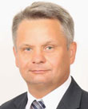

2026-07-10
Projekt wpłynął do Sejmu Druk nr 2801 ↗
u-prezydentaustawaStanowisko Senatu (2026-09-24)Sejm 10/2801
| Proces | Sejm kadencja 10, nr 2801 |
|---|---|
| Wpłynął | 2026-07-10 |
| Ostatnia zmiana źródła | 2026-09-24 |
| RCL | legislacja.rcl.gov.pl ↗ |
| Źródło | api.sejm.gov.pl ↗ |
376 zdarzeń
10. kadencja, 64. posiedzenie, 1. dzień - Poseł Sprawozdawca Weronika Smarduch 10. kadencja, 64. posiedzenie, 1. dzień (02-09-2026) 3. punkt porządku dziennego: Sprawozdanie Komisji do Spraw Deregulacji o rządowym projekcie ustawy o zmianie ustawy o związkach zawodowych oraz ustawy o informowaniu pracowników i przeprowadzaniu z nimi konsultacji (druki nr 2801 i 2877). Poseł Sprawozdawca Weronika Smarduch: Szanowny Panie Marszałku! Wysoka Izbo! Mam przyjemność przedstawić sprawozdanie komisji o rządowym projekcie ustawy o zmianie ustawy o związkach zawodowych oraz ustawy o informowaniu pracowników i przeprowadzaniu z nimi konsultacji. Projekt ustawy ma charakter deregulacyjny i ma za zadanie ułatwienie komunikacji pomiędzy pracodawcami i związkami zawodowymi oraz radami pracowników. Komisja wnosi o przyjęcie tego projektu ustawy. Dziękuję bardzo. (Oklaski) Przebieg posiedzenia
10. kadencja, 64. posiedzenie, 1. dzień - Poseł Aleksandra Kot 10. kadencja, 64. posiedzenie, 1. dzień (02-09-2026) 3. punkt porządku dziennego: Sprawozdanie Komisji do Spraw Deregulacji o rządowym projekcie ustawy o zmianie ustawy o związkach zawodowych oraz ustawy o informowaniu pracowników i przeprowadzaniu z nimi konsultacji (druki nr 2801 i 2877). Poseł Aleksandra Kot: Panie Marszałku! Wysoka Izbo! Omawiany projekt ustawy jest ważnym krokiem w kierunku nowoczesnego, sprawnego rynku pracy. Jest to projekt o charakterze deregulacyjnym, a jego głównym celem jest uproszczenie przepisów. Ma on za zadanie uelastycznić komunikację między pracodawcami a zakładowymi organizacjami związkowymi. Te postulaty deregulacyjne są wynikiem pracy rządowego zespołu do spraw deregulacji. Najważniejsze w tym projekcie jest jednak to, że umożliwia on znacznie szersze wykorzystanie formy dokumentowej oraz elektronicznej zamiast dotychczasowej tradycyjnej formy pisemnej. Przede wszystkim zakładowa organizacja związkowa będzie miała możliwość składania wniosku o przekazanie informacji o liczbie osób stanowiących kadrę kierowniczą właśnie w formie elektronicznej lub dokumentowej. Pracodawca albo związki zawodowe będą mogły w układzie zbiorowym pracy lub w porozumieniu ustalić, że to właśnie drogą elektroniczną lub w formie dokumentowej będą przekazywane istotne informacje dotyczące np. przejścia zakładu pracy lub jego części na nowego pracodawcę. Podobne ułatwienia i usprawnienia przewidziano w relacjach pomiędzy pracodawcą a radą pracowników. Rada pracowników będzie mogła składać wnioski o udzielenie informacji w formie elektronicznej lub dokumentowej i pracodawca w takiej samej formie będzie mógł przekazywać te informacje. Wybór formy dokumentowej czy elektronicznej nie będzie narzucany odgórnie, ale będzie wymagał akceptacji rady pracowników lub partnerów społecznych. Strony będą więc mogły samodzielnie ustalić najbardziej dogodny sposób komunikacji między sobą. Jest to rozwiązanie nowoczesne, które nie tylko pozwala na dostosowanie właśnie takiej komunikacji do współczesnych standardów, ale też daje elastyczność i likwiduje bariery, czyli realizuje wszystkie cele, jakie miał rządowy zespół do spraw deregulacji i Komisja do Spraw Deregulacji. Klub Koalicji Obywatelskiej popiera ten projekt ustawy. Dziękuję. (Oklaski) Przebieg posiedzenia
10. kadencja, 64. posiedzenie, 1. dzień - Poseł Patryk Wicher 10. kadencja, 64. posiedzenie, 1. dzień (02-09-2026) 3. punkt porządku dziennego: Sprawozdanie Komisji do Spraw Deregulacji o rządowym projekcie ustawy o zmianie ustawy o związkach zawodowych oraz ustawy o informowaniu pracowników i przeprowadzaniu z nimi konsultacji (druki nr 2801 i 2877). Poseł Patryk Wicher: Szanowny Panie Marszałku! Wysoka Izbo! Szanowni Państwo! Generalnie ta ustawa oczywiście kroczy w dobrym kierunku, natomiast mamy nadwykorzystywanie słowa: deregulacja w pracach polskiego parlamentu. Deregulacja to uproszczenie jakiejś procedury, wyeliminowanie jakiegoś obowiązku albo zmniejszenie ilości sprawozdań, zmniejszenie liczby jakichś przepisów prawnych, które zobowiązują nas do czegoś. To usprawnienie, przyspieszenie, skrócenie, wyeliminowanie. Natomiast my mówimy tylko i wyłącznie o technicznym rozwiązaniu. Mamy cyfryzację, mamy sztuczną inteligencję, mamy coraz więcej różnego typu zabezpieczonych i szyfrowanych komunikatorów, mamy podpisy elektroniczne kwalifikowane, ale nie tylko. W związku z tym upraszczamy formę komunikacji, dopuszczając komunikację w formie papierowej, tradycyjnej i w formie elektronicznej. To z deregulacją, moi drodzy państwo, nie ma nic wspólnego. Wielokrotnie na tej mównicy podkreślałem, że nadużywa się tego, ponieważ rząd chce pokazać, jaki to on jest otwarty na przedsiębiorców i Polaków, jak to ułatwia nam życie. Tylko, moi drodzy państwo, te wszystkie ustawy deregulacyjne sprawiły, że system prawny jest bardziej zagmatwany, od kiedy zostały wdrożone, niż było to wcześniej. Przykład? Prawo farmaceutyczne. Nawet nie wiem, czy państwo wiecie, że tę samą ustawę zmieniamy piąty albo szósty raz w ciągu ostatniego roku. Proszę sobie wyobrazić, że pierwsza zmiana była miesiąc przed drugą zmianą. Jeszcze nie skończyliśmy pierwszej procedurowej zmiany, a już była druga zmiana. Nie skończyliśmy tych dwóch pierwszych, a już była trzecia zmiana tej samej ustawy. Dwie procedury zmiany były uruchomione, jeszcze nie były zakończone. Zmiany natomiast były kosmetyczne, dosłownie kosmetyczne. Czy nie można byłoby zebrać tego w jednej nowelizacji i w jednym rzucie wdrożyć pięciu czy sześciu rozwiązań? O co jednak chodzi? Chodzi o to, żeby sztucznie rozmnażać ustawy, które nazywamy deregulacyjnymi, bo ktoś kiedyś obiecał, że będzie 300 ustaw, a może 1000, a może 2000. W takim trybie możecie państwo osiągnąć taką liczbę ustaw deregulacyjnych. To nie ma jednak sensu. To jest złuda. To jest tak naprawdę fatamorgana związana z pojęciem deregulacji. Państwu się wydaje, że tworzycie deregulację. Wracając ad rem, do tego projektu, powiem, że projekt jest po prostu usprawnieniem możliwości komunikacji, dodatkową jej formą. Oczywiście jest to forma dobrowolna. Mam nadzieję, że Państwowa Inspekcja Pracy i organy państwowe do tego powołane będą to mocno kontrolować. Chodzi o to, żeby duzi pracodawcy nie narzucali małym związkom zawodowym bądź grupom pracowniczym zgrupowanym w różnych stowarzyszeniach formy komunikacji elektronicznej. Są przecież osoby, które preferują dokumenty w formie tradycyjnej. Mam nadzieję, że dobrowolność, która jest ujęta w tej ustawie, będzie silnie przez instytucje nadzoru pilnowana, żeby nie wylać dziecka z kąpielą i nie zaszkodzić tym relacjom. Ponadto bardzo ważne jest to, żeby w układach zbiorowych ustalić formy komunikacji. Chodzi o to, żeby nie było sytuacji, że wysyłamy e-mail na jakiś domniemany, nieustalony wcześniej głównie w ramach jakiejś umowy, nieskonsultowany e-mail, bo e-mail np. wpadnie do spamu. Muszą to być formy jasne i klarowne. Muszą to być ustalone formy państwowe, np. mObywatel, jakieś komunikatory, ePUAP-y, podpisy kwalifikowane, żeby ta komunikacja elektroniczna miała swoją wagę, choćby w przypadku różnych spraw sądowych. To jest istotne. Musi być bardzo wyraźnie powiedziane, podkreślone i ustalone to, gdzie te informacje mają być przesyłane. W związku z tym bardzo pozytywnie oceniamy kierun
10. kadencja, 64. posiedzenie, 1. dzień - Poseł Grzegorz Macko 10. kadencja, 64. posiedzenie, 1. dzień (02-09-2026) 3. punkt porządku dziennego: Sprawozdanie Komisji do Spraw Deregulacji o rządowym projekcie ustawy o zmianie ustawy o związkach zawodowych oraz ustawy o informowaniu pracowników i przeprowadzaniu z nimi konsultacji (druki nr 2801 i 2877). Poseł Grzegorz Macko: Panie Marszałku! Wysoka Izbo! Cyfryzacja komunikacji w miejscu pracy oczywiście jest potrzebna, bo szybszy obieg dokumentacji i ograniczenie zbędnej biurokracji odpowiadają realiom współczesnego rynku pracy. Pozytywnie oceniamy zmianę wprowadzoną pod wpływem stanowiska związków zawodowych, zgodnie z którą elektroniczny lub dokumentowy sposób przekazywania najważniejszych informacji między pracodawcą a zakładową organizacją związkową ma wynikać z układu zbiorowego albo z porozumienia stron. Uważamy, że jest to właściwy kierunek, gdyż pracodawca nie powinien jednostronnie narzucać zasad komunikacji w sprawach ważnych dla pracowników. Oczywiście komunikacja elektroniczna nie może też powodować sporów o to, czy informacja została skutecznie doręczona albo kiedy rozpoczął się bieg terminu. Jest to ważne chociażby ze względu na wpływ, jaki to ma na sądowe rozstrzygnięcia w sprawach pracowniczych. Uważamy, że uwzględnienie najważniejszych uwag strony społecznej poprawiło ten projekt. Jednocześnie negatywnie oceniamy nieuwzględnienie postulatu ˝Solidarności˝, który dotyczył wyraźnego zobowiązania pracodawców do udostępniania organizacjom związkowym danych pracowników niezbędnych do przeprowadzenia referendum strajkowego lub wyborów społecznego inspektora pracy. Liczymy jako klub Rozwój Plus, że w dalszych pracach parlamentarnych postulaty strony społecznej znajdą poparcie. Jako klub będziemy popierali te rozwiązania, które realnie wzmacniają prawa związkowe i umożliwiają pracownikom skuteczne korzystanie z ich ustawowych uprawnień. Dziękuję. Przebieg posiedzenia
10. kadencja, 64. posiedzenie, 1. dzień - Poseł Jacek Tomczak 10. kadencja, 64. posiedzenie, 1. dzień (02-09-2026) 3. punkt porządku dziennego: Sprawozdanie Komisji do Spraw Deregulacji o rządowym projekcie ustawy o zmianie ustawy o związkach zawodowych oraz ustawy o informowaniu pracowników i przeprowadzaniu z nimi konsultacji (druki nr 2801 i 2877). Poseł Jacek Tomczak: Panie Marszałku! Wysoka Izbo! Cieszy to, że po wakacyjnej przerwie jednym z pierwszych projektów ustaw, którym zajmujemy się na sali plenarnej, jest projekt deregulacyjny. Projekt dotyczy zmian w ustawie o związkach zawodowych oraz ustawie o informowaniu pracowników i przeprowadzaniu z nimi konsultacji. Jego podstawowy cel jest prosty: uelastyczni on komunikację między pracodawcami, związkami zawodowymi oraz radami pracowników i dopuści, obok tradycyjnej formy pisemnej, również formę dokumentową i formę elektroniczną. Proponowane rozwiązanie należy oceniać bardzo pozytywnie. Dobrze zaprojektowana zmiana może oznaczać szybszą komunikację, mniej formalności i więcej czasu na rzeczywisty dialog między pracodawcą a pracownikami. Warto zresztą zauważyć, że projekt wprost wskazuje na dostosowanie przepisów do realnej, współczesnej komunikacji, poczty elektronicznej, platform internetowych, cyfrowego obiegu informacji. Wysoka Izbo! Przed nami ostatni rok kadencji. Mam nadzieję, że wykorzystamy go dobrze i że ten projekt nie będzie wyjątkiem, lecz jednym z wielu kolejnych deregulacji procedowanych przez Sejm. Jako Klub Parlamentarny PSL popieramy dalsze procedowanie nad tym projektem ustawy. Dziękuję bardzo. (Przewodnictwo w obradach obejmuje wicemarszałek Sejmu Dorota Niedziela) Przebieg posiedzenia
10. kadencja, 64. posiedzenie, 1. dzień - Poseł Tadeusz Tomaszewski 10. kadencja, 64. posiedzenie, 1. dzień (02-09-2026) 3. punkt porządku dziennego: Sprawozdanie Komisji do Spraw Deregulacji o rządowym projekcie ustawy o zmianie ustawy o związkach zawodowych oraz ustawy o informowaniu pracowników i przeprowadzaniu z nimi konsultacji (druki nr 2801 i 2877). Poseł Tadeusz Tomaszewski: Szanowna Pani Marszałek! Wysoki Sejmie! Pani Minister! Klub poselski Lewicy popiera rządowe przedłożenie dotyczące nowelizacji ustawy o związkach zawodowych oraz o informowaniu pracowników i przeprowadzaniu z nimi konsultacji. Ta zmiana to przede wszystkim ułatwienie komunikacji między pracodawcą a związkami zawodowymi oraz radami pracowniczymi. To przede wszystkim właśnie możliwość uzyskiwania i przekazywania informacji w formie elektronicznej i dokumentowej. Mamy tu jednak takie rozwiązanie, że wprowadzenie tej nowelizacji będzie się odbywało za obopólną zgodą. Jeśli chodzi o związki zawodowe, to może być to przewidziane również w układzie zbiorowym. W związku z tym nie ma żadnych zagrożeń, że wprowadzenie rozwiązania dotyczącego dokumentacji, również elektronicznej, spowoduje określone zakłócenia we wzajemnych relacjach między pracodawcą, związkami zawodowymi a innymi podmiotami. Dlatego też klub Lewicy opowiada się za przyjęciem na tym posiedzeniu tego rozwiązania rządu i oczekuje dalszych projektów deregulacyjnych. Dzisiaj Polska pokazywana jest m.in. na spotkaniu grupy G20 jako ten kraj, który konsekwentnie wdraża właśnie deregulację do życia publicznego, do gospodarki, ułatwiając funkcjonowanie obywatelom, ale także podmiotom gospodarczym i uczestnikom życia publicznego. Dziękuję. (Oklaski) Przebieg posiedzenia
10. kadencja, 64. posiedzenie, 1. dzień - Poseł Witold Tumanowicz 10. kadencja, 64. posiedzenie, 1. dzień (02-09-2026) 3. punkt porządku dziennego: Sprawozdanie Komisji do Spraw Deregulacji o rządowym projekcie ustawy o zmianie ustawy o związkach zawodowych oraz ustawy o informowaniu pracowników i przeprowadzaniu z nimi konsultacji (druki nr 2801 i 2877). Poseł Witold Tumanowicz: Pani Marszałek! Wysoka Izbo! Ten projekt ustawy jest przykładem niewielkiej, ale potrzebnej deregulacji. Jego celem jest przede wszystkim odejście od zbędnego formalizmu w komunikacji pomiędzy pracodawcami, związkami zawodowymi i radami pracowników. Obecne przepisy w części przypadków nadal wymagają przekazywania informacji czy składania wniosków na piśmie. Projekt rozszerza te możliwości o formę dokumentową i elektroniczną, dostosowując prawo do sposobu, w jaki obecnie funkcjonują przedsiębiorstwa i pracownicy komunikują się z pracodawcami. Co ważne, nie mamy tutaj do czynienia z narzucaniem obowiązkowej elektronizacji w relacjach ze związkami zawodowymi. Strony będą mogły same uzgodnić odpowiednie rozwiązania w układzie zbiorowym lub porozumieniu. Podobnie w przypadku rad pracowników wybór formy przekazywania informacji wymaga ich wcześniejszej akceptacji. Przedstawianie stronom takiej swobody należy ocenić pozytywnie. Dodatkowo projekt nie tworzy nowych kosztów dla finansów publicznych. Jego założeniem jest ograniczenie liczby dokumentów, skrócenie czasu potrzebnego do załatwienia sprawy i usprawnienie komunikacji. Dlatego takie drobne, proste zmiany klub Konfederacja będzie popierał. Dziękuję. Przebieg posiedzenia
10. kadencja, 64. posiedzenie, 1. dzień - Poseł Ryszard Petru 10. kadencja, 64. posiedzenie, 1. dzień (02-09-2026) 3. punkt porządku dziennego: Sprawozdanie Komisji do Spraw Deregulacji o rządowym projekcie ustawy o zmianie ustawy o związkach zawodowych oraz ustawy o informowaniu pracowników i przeprowadzaniu z nimi konsultacji (druki nr 2801 i 2877). Poseł Ryszard Petru: Pani Marszałek! Wysoka Izbo! Tak, większość przedmówców już to powiedziała: projekt potrzebny, prosty, a jednocześnie taki, który zakłada, że między pracodawcą a związkami zawodowymi będzie można wymieniać się informacją nie tylko w formie pisemnej, ale również w formie elektronicznej. To jest ważne, bo zawsze papierologia to są bariery administracyjne, to jest więcej kosztów, wolniej ten proces przebiega. Zwrócę uwagę na to, że deregulacja to jest po prostu uproszczenie - uproszczenie barier, szybszy obieg informacji. Pojawiają się propozycje, żeby proces deregulacji był głębszy, w takim sensie, żeby była jedna wielka ustawa, która zmienia kilkanaście innych. Ale my tak naprawdę już przerobiliśmy ponad 100 ustaw i każda taka punktowa ustawa zmienia polską rzeczywistość. Wolałbym oczywiście, żeby to było w większej skali, żeby forma elektroniczna naprawdę wyparła papier, np. w Sejmie. Kiedy przychodzimy do Sejmu, musimy składać podpisy fizycznie w tej sali obok, a można by logować się wyłącznie poprzez włożenie karty do głosowania i to byłoby potwierdzenie obecności. W związku z tym niech ten projekt ustawy - który, tak jak powiedziano, nie narzuca nikomu formy, może być i tak, i tak - będzie przykładem, jak możemy w większej liczbie spraw przejść na formę elektroniczną, tam gdzie jest to możliwe, tam gdzie jest taka potrzeba, tam gdzie ludzie czy pracownicy, pracodawcy czy też urzędy się na to zgadzają. Apeluję o tego typu podejście również w tym budynku. Oczywiście będziemy popierać ten projekt. Dziękuję bardzo. Przebieg posiedzenia
10. kadencja, 64. posiedzenie, 1. dzień - Poseł Piotr Górnikiewicz 10. kadencja, 64. posiedzenie, 1. dzień (02-09-2026) 3. punkt porządku dziennego: Sprawozdanie Komisji do Spraw Deregulacji o rządowym projekcie ustawy o zmianie ustawy o związkach zawodowych oraz ustawy o informowaniu pracowników i przeprowadzaniu z nimi konsultacji (druki nr 2801 i 2877). Poseł Piotr Górnikiewicz: Dziękuję. Pani Marszałek! Wysoka Izbo! W imieniu Klubu Parlamentarnego Polska 2050 mam zaszczyt przedstawić stanowisko wobec rządowego projektu ustawy o zmianie ustawy o związkach zawodowych oraz ustawy o informowaniu pracowników i przeprowadzaniu z nimi konsultacji. Rozpatrywany dziś projekt to długo oczekiwany krok w stronę normalności i dostosowania polskiego prawa pracy do realiów XXI w. Żyjemy w czasach, w których cyfrowy obieg dokumentów jest standardem. Przedsiębiorcy, pracownicy, a także urzędy państwowe na co dzień korzystają z poczty elektronicznej, komunikatorów i e-podpisów. Z tego punktu widzenia wymuszanie na pracodawcach i przedstawicielach pracowników, by prowadzili ze sobą korespondencję wyłącznie w tradycyjnej, papierowej formie, jawi się jako całkowicie niezrozumiały anachronizm. Biurokracja nie służy dialogowi. Obecnie obowiązujące przepisy zmuszają obie strony dialogu społecznego do drukowania, pakowania w koperty, wysyłania listów poleconych i żmudnego archiwizowania setek kartek papieru. Ten nadmierny formalizm generuje koszty, zabiera czas, a co najważniejsze - opóźnia komunikację. Dzięki nowelizacji w sprawach takich jak informowanie o przejściu zakładu pracy na nowego pracodawcę czy w procesie konsultacji z radą pracowników papier przestanie być jedyną dopuszczalną drogą. Wprowadzenie możliwości korzystania z formy dokumentowej oraz formy elektronicznej to ogromne ułatwienie. To dowód na to, że państwo zaczyna dostrzegać rzeczywistość cyfrową i ufa partnerom społecznym. Jako klub parlamentarny z satysfakcją odnotowujemy, że projektodawca zachował w tym procesie niezbędną równowagę. Deregulacja nie może oznaczać chaosu ani pozbawienia pracowników ich praw. Projekt opiera się na zasadzie swobody. Przejście na nowoczesne kanały komunikacji wymaga zgody obu stron - czy to poprzez odpowiednie zapisy w układzie zbiorowym pracy, czy w odrębnym porozumieniu. Pracodawca nie będzie mógł jednostronnie narzucić pracownikom elektronicznego obiegu dokumentów, jeśli organizacja związkowa lub rada pracowników nie jest na to gotowa pod względem sprzętowym czy organizacyjnym. Ten mechanizm ochronny jest bardzo ważny i odpowiada na obawy wyrażane przez stronę społeczną. Warto również zauważyć, że komisja do spraw deregulacji nie dopatrzyła się w projekcie żadnych wad merytorycznych, ograniczając się jedynie do koniecznych szlifów redakcyjnych. Wysoka Izbo! Gospodarka potrzebuje jasnych, elastycznych i odchudzonych z nadmiaru biurokracji przepisów. Partnerzy społeczni potrzebują narzędzi do szybkiej i efektywnej komunikacji. Ten projekt realizuje oba te cele. W związku z powyższym Klub Parlamentarny Polska 2050 w pełni popiera zaproponowane zmiany i będzie głosował za uchwaleniem tej ustawy. Dziękuję. Przebieg posiedzenia
10. kadencja, 64. posiedzenie, 1. dzień - Poseł Jarosław Sachajko 10. kadencja, 64. posiedzenie, 1. dzień (02-09-2026) 3. punkt porządku dziennego: Sprawozdanie Komisji do Spraw Deregulacji o rządowym projekcie ustawy o zmianie ustawy o związkach zawodowych oraz ustawy o informowaniu pracowników i przeprowadzaniu z nimi konsultacji (druki nr 2801 i 2877). Poseł Jarosław Sachajko: Szanowna Pani Marszałek! Pani Minister! Wysoka Izbo! Ten projekt co do zasady zasługuje na poparcie. Wreszcie mamy do czynienia z deregulacją, która nie polega na tworzeniu kolejnych urzędów, obowiązków i formularzy, lecz na prostym dostosowaniu prawa do rzeczywistości. Dzisiaj ogromna część komunikacji pomiędzy pracodawcami, pracownikami i organizacjami związkowymi odbywa się elektronicznie. Tymczasem przepisy nadal w wielu miejscach opierają się na papierowym obiegu dokumentów. Projekt pozwala związkom zawodowym składać określone wnioski nie tylko pisemnie, ale również w formie dokumentowej lub elektronicznej. To samo dotyczy rad pracowników. Pracodawca będzie mógł przekazywać potrzebne informacje także elektronicznie, a więc szybciej, taniej i bez produkowania kolejnych segregatorów dokumentów. To jest kierunek, który należy poprzeć. Na plus należy zaliczyć również pozostawienie stronom możliwości uzgodnienia sposobu przekazywania informacji w układzie zbiorowym lub porozumieniu. Dobrze również, że w przypadku rady pracowników wybór formy przekazania informacji wymaga jej wcześniejszej akceptacji. Pracodawca nie będzie więc mógł jednostronnie narzucić rozwiązania, które utrudni pracownikom dostęp do informacji. Ale nawet przy tak prostym projekcie widzimy kilka ryzyk. Pierwszym jest kwestia skutecznego doręczenia. Skoro od momentu otrzymania wniosku zaczyna biec 7-dniowy termin, to powinno być absolutnie jasne, kiedy dokument elektroniczny uznajemy za otrzymany - czy w chwili wysłania wiadomości, czy jej wpłynięcia na serwer, czy dopiero jej odczytania. Brak jednoznaczności może, zamiast ograniczyć biurokrację, stworzyć nowe spory. Drugie zagrożenie dotyczy adresów i kanałów komunikacji. Powinniśmy mieć pewność, że strony wcześniej jednoznacznie ustalą, na jaki adres elektroniczny dokumenty mają być przekazywane i kto odpowiada za jego prawidłowe funkcjonowanie. Trzecia rzecz to bezpieczeństwo informacji. Rady pracowników i związki zawodowe mogą otrzymywać dane wrażliwe dla przedsiębiorstwa. Elektronizacja nie może oznaczać pogorszenia ochrony tych informacji. Dlatego popierając kierunek tej ustawy warto jeszcze dopracować przepisy dotyczące doręczeń, potwierdzenia odbioru oraz bezpieczeństwa elektronicznego obiegu dokumentów. Wysoka Izbo! To jest właśnie taka deregulacja, jakiej potrzebujemy: mniej papieru, mniej formularzy i szybsza komunikacja. Trzeba tylko dopilnować, aby cyfryzując procedury, nie przenieść dawnych problemów z papieru do skrzynki mailowej. Dlatego projekt oceniamy pozytywnie i będziemy go popierać, jednocześnie oczekując doprecyzowania wskazanych kwestii. Dziękuję. (Oklaski) Przebieg posiedzenia
10. kadencja, 64. posiedzenie, 1. dzień - Poseł Witold Tumanowicz 10. kadencja, 64. posiedzenie, 1. dzień (02-09-2026) 3. punkt porządku dziennego: Sprawozdanie Komisji do Spraw Deregulacji o rządowym projekcie ustawy o zmianie ustawy o związkach zawodowych oraz ustawy o informowaniu pracowników i przeprowadzaniu z nimi konsultacji (druki nr 2801 i 2877). Poseł Witold Tumanowicz: Pani Marszałek! Wysoka Izbo! Mam pytanie: W jaki sposób w praktyce będą rozstrzygane spory dotyczące momentu skutecznego przekazania informacji drogą elektroniczną, szczególnie w sytuacji gdy od dnia jej otrzymania biegną określone terminy? Dziękuję bardzo. Przebieg posiedzenia
10. kadencja, 64. posiedzenie, 1. dzień - Poseł Anna Gembicka 10. kadencja, 64. posiedzenie, 1. dzień (02-09-2026) 3. punkt porządku dziennego: Sprawozdanie Komisji do Spraw Deregulacji o rządowym projekcie ustawy o zmianie ustawy o związkach zawodowych oraz ustawy o informowaniu pracowników i przeprowadzaniu z nimi konsultacji (druki nr 2801 i 2877). Poseł Anna Gembicka: Pani Marszałek! Wysoka Izbo! Ten projekt przedstawia się jako deregulację i ułatwienie dialogu społecznego, ale skoro już mówimy o dialogu społecznym, to być może warto przy tej okazji uwzględnić uwagi przekazane przez związek zawodowy ˝Solidarność˝, który wskazał na różne systemowe problemy w działalności związkowej, na co rząd odpowiedział: To wykracza poza cel regulacji. Ale skoro już pracujemy nad tym projektem, być może warto byłoby to uwzględnić. ˝Solidarność˝ zwróciła uwagę chociażby na to, że pracodawcy mogą odmawiać związkom przekazywania danych pracowników potrzebnych do przeprowadzenia referendum strajkowego czy wyborów społecznego inspektora pracy. Taki brak wyraźnego obowiązku ustawowego oznacza, że odmowa może pozostać bez realnej sankcji. Związek wskazał też na 30-dniowy termin udzielenia informacji, który utrudnia bieżącą działalność związkową, oraz problemy pracowników przejmowanych wraz z zakładem pracy. Powtórzę: Skoro (Dzwonek) ta ustawa jest już nowelizowana, to dlaczego nie zajmiemy się tym, żeby oprócz kwestii wysyłania dokumentów e-mailem rozwiązać problemy, które wskazuje największy związek zawodowy w Polsce? (Oklaski) Przebieg posiedzenia
10. kadencja, 64. posiedzenie, 1. dzień - Poseł Lidia Czechak 10. kadencja, 64. posiedzenie, 1. dzień (02-09-2026) 3. punkt porządku dziennego: Sprawozdanie Komisji do Spraw Deregulacji o rządowym projekcie ustawy o zmianie ustawy o związkach zawodowych oraz ustawy o informowaniu pracowników i przeprowadzaniu z nimi konsultacji (druki nr 2801 i 2877). Poseł Lidia Czechak: Szanowna Pani Marszałek! Również mam dwa pytania do tego projektu ustawy. Projekt zakłada możliwość przekazywania istotnych informacji pomiędzy pracodawcą a związkami zawodowymi oraz radami pracowników także drogą elektroniczną, w tym zwykłą wiadomością e-mail. Mam pytanie: W jaki sposób rząd zamierza zagwarantować pewność doręczenia takich informacji, możliwość jednoznacznego ustalenia daty ich otrzymania oraz ochronę przed sytuacją, w której pracodawca albo organizacja związkowa będzie kwestionować fakt otrzymania wiadomości? Czy w imię deregulacji nie stworzymy jednocześnie nowego pola do sporów pomiędzy pracownikami, związkami zawodowymi i pracodawcami? W uzasadnieniu rząd zapewnia, że projekt nie stwarza ryzyka dla bezpieczeństwa obrotu prawnego, ale jednocześnie rezygnuje z przepisów przejściowych i zakłada bezpośrednie stosowanie nowych zasad także do już rozpoczętych procedur. Na jakiej podstawie rząd uznał, że nie są potrzebne przepisy przejściowe? Czy przeprowadzono konsultacje ze związkami zawodowymi oraz organizacjami pracodawców dotyczące bezpieczeństwa takiego rozwiązania? Czy rząd może zagwarantować, że zmiana zasad komunikacji (Dzwonek) w trakcie już rozpoczętych spraw nie spowoduje sporów dotyczących skuteczności wcześniej złożonych wniosków i dokonanych doręczeń? Dziękuję. Przebieg posiedzenia
10. kadencja, 64. posiedzenie, 1. dzień - Poseł Wioletta Maria Kulpa 10. kadencja, 64. posiedzenie, 1. dzień (02-09-2026) 3. punkt porządku dziennego: Sprawozdanie Komisji do Spraw Deregulacji o rządowym projekcie ustawy o zmianie ustawy o związkach zawodowych oraz ustawy o informowaniu pracowników i przeprowadzaniu z nimi konsultacji (druki nr 2801 i 2877). Poseł Wioletta Maria Kulpa: Pani Marszałek! Wysoka Izbo! Ochrony pracowników nie wolno sprowadzać do zwykłego e-maila czy pliku PDF, tym bardziej że chodzi o późniejsze dochodzenie swoich praw przed sądami. ˝Solidarność˝ przestrzega, że forma dokumentowa przewidziana w tym projekcie nie daje pewności, kto sporządził dokument, kiedy został on skutecznie doręczony i od kiedy biegnie termin przewidziany na reakcję związku. Ma to szczególne znaczenie przy przejęciu zakładu pracy lub ustalaniu liczby działaczy chronionych przed zwolnieniem. Dobrze, że wprowadzono wymóg porozumienia stron. Nie określono jednak ustawowo zasad potwierdzania odbioru ani skutków awarii systemu informatycznego. Kto poniesie konsekwencje, jeżeli wiadomość pracodawcy trafi do spamu albo na nieaktualny adres, a termin przewidziany na reakcję związku już rozpocznie bieg? Dlaczego rząd odrzucił postulat ˝Solidarności˝, czyli dodanie do art. 28 obowiązku przekazywania danych pracowników niezbędnych do przeprowadzenia referendum strajkowego i wyborów SIP? Obowiązek przekazywania danych niezbędnych do przeprowadzenia referendum i wyborów jest nadrzędnym celem działalności ˝Solidarności˝ i innych związków zawodowych. Czy pomijanie rzeczywistych (Dzwonek) problemów związkowych przy jednoczesnym osłabianiu pewności dowodowej dokumentów chroniących działaczy przed zwolnieniem nie jest elementem otwartej wojny ze związkami zawodowymi prowadzonej pod pozorem deregulacji? Dziękuję bardzo. Przebieg posiedzenia
10. kadencja, 64. posiedzenie, 1. dzień - Poseł Bożena Lisowska 10. kadencja, 64. posiedzenie, 1. dzień (02-09-2026) 3. punkt porządku dziennego: Sprawozdanie Komisji do Spraw Deregulacji o rządowym projekcie ustawy o zmianie ustawy o związkach zawodowych oraz ustawy o informowaniu pracowników i przeprowadzaniu z nimi konsultacji (druki nr 2801 i 2877). Poseł Bożena Lisowska: Pani Marszałek! Wysoki Sejmie! Rządowy projekt z druku nr 2801 wprowadza do dialogu społecznego nowoczesne formy kontaktu i komunikacji. Umożliwia składanie wniosków i przekazywanie ich między pracodawcą a związkami zawodowymi czy radami pracowników w formie dokumentowej lub elektronicznej, dając stronom prawo wyboru. Nowe przepisy pozwalają związkom składać wniosek o informację o kadrze kierowniczej także drogą elektroniczną, a pracodawca ma 7 dni na odpowiedź. Strony będą mogły wspólnie ustalać elektroniczny obieg dokumentów w porozumieniu. To ważne ułatwienie dla rad pracowników i dla komunikacji między stronami. Moje pytanie do państwa ministrów brzmi: Czy i kiedy planowana jest kampania informacyjna dla obu stron (Dzwonek) dialogu społecznego, aby zapobiec wątpliwościom co do skuteczności doręczeń elektronicznych? Przebieg posiedzenia
10. kadencja, 64. posiedzenie, 1. dzień - Poseł Małgorzata Pępek 10. kadencja, 64. posiedzenie, 1. dzień (02-09-2026) 3. punkt porządku dziennego: Sprawozdanie Komisji do Spraw Deregulacji o rządowym projekcie ustawy o zmianie ustawy o związkach zawodowych oraz ustawy o informowaniu pracowników i przeprowadzaniu z nimi konsultacji (druki nr 2801 i 2877). Poseł Małgorzata Pępek: Pani Marszałek! Wysoka Izbo! Taka właśnie jest deregulacja rozumiana praktycznie. Projekt ustawy nie zabiera żadnych praw pracownikom, nie ogranicza dialogu społecznego, tylko usuwa formalności, które nie mają już uzasadnienia w codziennym funkcjonowaniu zakładów pracy. To jest kierunek, którego powinniśmy oczekiwać od państwa: mniej formalności, więcej swobody i przepisy dostosowane do rzeczywistości, w której żyją pracownicy, pracodawcy i przedsiębiorcy. Uwzględniając argumentację zawartą w ocenie skutków regulacji dotyczącą braku odesłania do Kodeksu cywilnego w zbiorowym prawie pracy, proszę o odpowiedź na pytanie: Czy projektowany art. 32 w pełni rozstrzyga wątpliwości interpretacyjne co do równoważności zwykłego maila i wiadomości SMS (Dzwonek) z formą dokumentową? Dziękuję. (Oklaski) Przebieg posiedzenia
10. kadencja, 64. posiedzenie, 1. dzień - Poseł Patryk Wicher 10. kadencja, 64. posiedzenie, 1. dzień (02-09-2026) 3. punkt porządku dziennego: Sprawozdanie Komisji do Spraw Deregulacji o rządowym projekcie ustawy o zmianie ustawy o związkach zawodowych oraz ustawy o informowaniu pracowników i przeprowadzaniu z nimi konsultacji (druki nr 2801 i 2877). Poseł Patryk Wicher: Szanowna Pani Marszałek! Wysoka Izbo! Szanowni Państwo! Krótkie pytanie, które już tutaj się pojawiło. Najważniejszą rzeczą jest obieg dokumentów, ale także te dokumenty często są bardzo użyteczne bądź potrzebne w sprawach sądowych, w różnych postępowaniach, które się toczą. Tak jak było to już podkreślane, bardzo istotnym elementem są biegi terminów, które się rozpoczynają i kończą w określonym przedziale czasowym. Dlatego też bardzo ważny jest wybór formy przekazywania: elektronicznej bądź dokumentowej, żeby było podkreślone nie tylko to, kto sporządził ten dokument, ale dokładnie kiedy został przesłany, żeby było to odnotowane, jeśli chodzi o godzinę wpływu i miejsce wpływu. I to miejsce powinno być według mnie z góry ustalone w porozumieniu wstępnym między związkami bądź różnymi organizacjami, które dopuszczą właśnie taki obieg elektroniczny bądź dokumentowy. Powinny być wskazane konkretne komunikatory zabezpieczone ePUAP-em bądź podpisami kwalifikowanymi, żeby nie było żadnej wątpliwości co do tych dokumentów i ich mocy prawnej. Myślę, że takie rozwiązanie powinniśmy wykreować, żeby było to bezpieczne dla wszystkich stron (Dzwonek) tego obiegu prawnego. Dziękuję serdecznie. Przebieg posiedzenia
10. kadencja, 64. posiedzenie, 1. dzień - Poseł Małgorzata Tracz 10. kadencja, 64. posiedzenie, 1. dzień (02-09-2026) 3. punkt porządku dziennego: Sprawozdanie Komisji do Spraw Deregulacji o rządowym projekcie ustawy o zmianie ustawy o związkach zawodowych oraz ustawy o informowaniu pracowników i przeprowadzaniu z nimi konsultacji (druki nr 2801 i 2877). Poseł Małgorzata Tracz: Pani Marszałek! Wysoka Izbo! Cyfryzacja nie będzie batem na pracowników. Dzięki twardej postawie związkowców oraz otwartości rządu maile czy SMS-y wejdą do gry tylko za zgodą załogi w układzie zbiorowym, porozumieniu lub za akceptacją rady pracowników. Nieuczciwi szefowie nie będą mogli z góry narzucać formy komunikacji tylko po to, żeby gubić niewygodne wiadomości czy zacierać prawne terminy. Ta wprowadzona poprawka to dobra zmiana i cieszę się, że rząd się na nią zdecydował. Apeluję jednak o kolejny logiczny krok. Związki zawodowe od lat odbijają się od ściany, prosząc o absolutną podstawę - dostęp do danych załogi. Bez nich rzetelna obrona praw pracowniczych pozostaje walką z wiatrakami. Czas na jasny ustawowy obowiązek przekazywania związkom danych osobowych pracowników. (Oklaski) Przebieg posiedzenia
10. kadencja, 64. posiedzenie, 1. dzień - Poseł Marcin Józefaciuk 10. kadencja, 64. posiedzenie, 1. dzień (02-09-2026) 3. punkt porządku dziennego: Sprawozdanie Komisji do Spraw Deregulacji o rządowym projekcie ustawy o zmianie ustawy o związkach zawodowych oraz ustawy o informowaniu pracowników i przeprowadzaniu z nimi konsultacji (druki nr 2801 i 2877). Poseł Marcin Józefaciuk: Serdecznie dziękuję. Szanowna Pani Marszałek! Wysoka Izbo! Ogólnie popieram kierunek, w którym zmierza projekt, jednak mam kilka pytań. Jedno już padło. Kiedy informację elektroniczną będzie uważało się za skutecznie otrzymaną: czy w chwili wysłania, zapisania na serwerze, dostarczenia do skrzynki, czy potwierdzenia odbioru? Kto poniesie ryzyko, jeśli wiadomość trafi do spamu, zostanie wysłana po godzinach pracy albo na nieużywany adres? Kto zapewni członkom rady pracowników, przedstawicielom związków sprzęt, bezpieczną skrzynkę, dostęp do Internetu oraz dokumenty dostosowane do potrzeb osób z niepełnosprawnościami? Czy będzie można odmówić korzystania z prywatnego telefonu lub komputera bez negatywnych konsekwencji? Jak zostanie zagwarantowana poufność i niezależność komunikacji, jeśli związek zawodowy lub rada pracowników korzystają z serwera i skrzynek kontrolowanych przez pracodawcę? Czy określone zostaną zasady szyfrowania, przechowywania dokumentów, tworzenia kopii oraz zachowania dostępu po rozwiązaniu stosunku pracy? Dziękuję. Przebieg posiedzenia
10. kadencja, 64. posiedzenie, 1. dzień - Poseł Jarosław Sachajko 10. kadencja, 64. posiedzenie, 1. dzień (02-09-2026) 3. punkt porządku dziennego: Sprawozdanie Komisji do Spraw Deregulacji o rządowym projekcie ustawy o zmianie ustawy o związkach zawodowych oraz ustawy o informowaniu pracowników i przeprowadzaniu z nimi konsultacji (druki nr 2801 i 2877). Poseł Jarosław Sachajko: Bardzo dziękuję. Pani Marszałek! Pani Minister! Chciałem zapytać poza tematami, które poruszyłem w trakcie wystąpienia w imieniu Koła Poselskiego Demokracja Bezpośrednia, czy strony powinny mieć obowiązek wcześniejszego wskazania oficjalnego adresu elektronicznego do doręczeń, aby uniknąć sporów o to, czy wiadomość została wysłana na właściwy adres. I jak projekt zabezpiecza sytuację, w której wiadomość elektroniczna trafi do spamu, zostanie zablokowana przez system albo nie zostanie technicznie dostarczona, mimo że nadawca uznaje ją za skutecznie wysłaną? Dziękuję. (Oklaski) Przebieg posiedzenia
10. kadencja, 64. posiedzenie, 1. dzień - Podsekretarz Stanu w Ministerstwie Rodziny, Pracy i Polityki Społecznej Małgorzata Baranowska 10. kadencja, 64. posiedzenie, 1. dzień (02-09-2026) 3. punkt porządku dziennego: Sprawozdanie Komisji do Spraw Deregulacji o rządowym projekcie ustawy o zmianie ustawy o związkach zawodowych oraz ustawy o informowaniu pracowników i przeprowadzaniu z nimi konsultacji (druki nr 2801 i 2877). Podsekretarz Stanu w Ministerstwie Rodziny, Pracy i Polityki Społecznej Małgorzata Baranowska: Szanowna Pani Marszałek! Wysoka Izbo! Jeśli chodzi o ustalenie sposobu przekazywania informacji, to te informacje, jaka będzie komunikacja między stroną związków zawodowych a pracodawcą, będą ustalane w układzie zbiorowym. To w układzie zbiorowym będzie informacja, kiedy i w jaki sposób ta informacja ma być przekazywana, czy to ma być w formie dokumentowej, papierowej czy w formie elektronicznej. Jeśli chodzi o bezpieczeństwo przekazywania tych informacji, to pracodawca będzie odpowiedzialny za to, aby ustalić kanały bezpieczne, żeby te informacje nie wyciekały, bo tutaj mówimy o komunikacji pracodawcy z pracownikami, ze związkami zawodowymi. Jeśli chodzi o projekt, to projekt był opiniowany z dziesięcioma największymi związkami zawodowymi, a były to: Forum Związków Zawodowych, NSZZ ˝Solidarność˝, Ogólnopolskie Porozumienie Związków Zawodowych, Pracodawcy Rzeczypospolitej Polskiej, Konfederacja Lewiatan, Związek Rzemiosła Polskiego, Związek Pracodawców Business Centre Club, Związek Przedsiębiorców i Pracodawców, Federacja Przedsiębiorców Polskich oraz Polskie Towarzystwo Gospodarcze. Jeśli chodzi o opiniowanie, konsultowanie, to konsultacje trwały od września 2025 r. przez miesiąc, od 22 września do 22 października. Były też pytania związane z tym, czy zgodnie z obowiązkiem zasięgnięcia opinii projekt ustawy również otrzymali: główny inspektor ochrony pracy, rzecznik praw obywatelskich, rzecznik małych i średnich przedsiębiorców oraz Komisja Wspólna Rządu i Samorządu Terytorialnego. Jeśli chodzi o pytania związane z przepisami przejściowymi, w tym projekcie nie ma przepisów przejściowych, ponieważ w dniu wejścia ustawy nie było możliwości przekazywania informacji w formie innej niż papierowa. Dopiero kiedy ustawa wejdzie w życie, będzie można ustalić w układzie zbiorowym korzystanie z alternatywnych form komunikacji. Jeśli chodzi o sprawy sądowe, to bieg tych terminów będzie ustalany na podstawie Kodeksu cywilnego. Jeśli chodzi o komunikatory bezpieczne, to również mają być one ustalane w porozumieniu, w układzie zbiorowym, pomiędzy pracodawcą a związkami zawodowymi. Zmiany, na których nam najbardziej zależy, mają po prostu usprawnić pracę, komunikację pracodawców ze związkami zawodowymi. Zdecydowaliśmy się na taką deregulację, aby ułatwić komunikację, ponieważ pracownicy i pracodawcy nie korzystają zazwyczaj z formy papierowej. W dobie cyfryzacji wszyscy korzystają ze stron w celu przekazywania informacji drogą mailową czy w innej formie, jeśli chodzi o stronę dokumentową. Może być również tak, że pracodawca ustali w układzie zbiorowym, że będą sobie też np. wysyłali SMS-y. I to też będzie dopuszczalne. Jeśli chodzi o skuteczne doręczenia, to będą obowiązywały zasady Kodeksu cywilnego, nie wprowadzamy dodatkowych przepisów. Chodzi o to, aby nie utrudniać pracy pracodawcom i związkom zawodowym, tylko żeby je upraszczać. To chyba wszystko. Dziękuję bardzo. Przebieg posiedzenia
| Klub | Za | Przeciw | Wstrz. | Nieobec. |
|---|---|---|---|---|
| KO | 154 | 0 | 0 | 2 |
| P. Adamowicz U. Augustyn S. Bielawska P. Bliźniuk M. Bochenek K. Bojarski P. Borys M. Bosacki M. Chmielewski A. Chybicka J. Cichoń Z. Czernow B. Dolniak A. Domański R. Dowhan M. Filiks J. Frydrych K. Frysztak P. Gabriel K. Gadowski A. Gajewska K. Gajewska E. Gapińska Z. Gawlik E. Gelert A. Gierada R. Giertych W. Giziński M. Golbik S. Gorczyca K. Grabczuk J. Grabiec M. Gromadzka B. Grygorcewicz M. Gzik T. Głogowski P. Głowski K. Habura A. Hanajczyk I. Hartwich M. Hok Ł. Horbatowski K. Jachira R. Jagła M. Janyska M. Jaros P. Jaskulski D. Jazłowiecka D. Jaśkowiec P. Kandyba J. Karnowski I. Karolewska K. Kierzek-Koperska J. Kluzik-Rostkowska Z. Konwiński T. Kostuś U. Koszutska A. Kot P. Kowal I. Kozłowska E. Kołodziej M. Kołodziejczak M. Kołodziejczak M. Koźlakiewicz I. Krawczyk M. Krawczyk R. Kropiwnicki A. Krzemiński H. Krzywonos-Strycharska M. Krząkała W. Król K. Królak P. Lachowicz S. Lamczyk M. Lasek G. Lenartowicz I. Leszczyna B. Lisowska K. Lubnauer A. Marchewka D. Marek P. Masełko K. Matusik-Lipiec J. Meysztowicz K. Mieszkowski C. Mroczek A. Myrcha G. Napieralski D. Niedziela J. Niedźwiedzki M. Niemczyk J. Niezgodzka S. Nitras B. Nowacka T. Nowak M. Okła-Drewnowicz P. Olszewski K. Osos P. Papke K. Pawliczak K. Piekarska L. Pietrzczyk K. Piątkowski K. Plocke E. Polak A. Pomaska M. Popielarz M. Pępek R. Rak M. Roguska M. Rosa J. Rutnicki M. Rząsa K. Sibińska R. Siemaszko T. Siemoniak K. Skowrońska W. Smarduch A. Sobolak M. Sowa K. Stachowicz F. Sterczewski P. Suski A. Szewiński H. Szopiński K. Szumilas T. Szymański A. Szłapka W. Sługocki A. Tajner C. Tomczyk M. Tomczykiewicz M. Tracz K. Truskolaski D. Tusk J. Urbaniak A. Uznańska-Wiśniewska R. Wardzała J. Wałęsa M. Wielichowska A. Witczak M. Witczak P. Witek A. Wojciechowska B. Wołoszański M. Wróbel B. Zawieja W. Zembaczyński U. Zielińska A. Łepkowska-Gołaś D. Łoboda M. Łośko A. Łuczak K. Łuczak A. Łącki Ł. Ściebiorowski | ||||
| PiS | 0 | 1 | 140 | 5 |
| A. Adamczyk W. Andzel D. Arciszewska-Mielewczyk I. Arent M. Ast P. Babinetz B. Bartuś R. Bochenek J. Bogucki J. Borowiak K. Bortniczuk B. Borys-Szopa L. Burzyńska M. Błaszczak A. Chojecki K. Choma D. Chorosińska T. Chrzan K. Ciecióra K. Czarnecki W. Czarnecki P. Czarnek A. Czartoryski L. Czechak A. Czerwińska K. Czochara W. Dajczak Z. Dolata B. Dorywalski P. Drabek J. Dziedziczak A. Dąbrowska-Banaszek M. Filipek-Sobczak R. Fogiel A. Gawron G. Gaża A. Gembicka P. Gliński M. Golińska M. Gosek K. Gołojuch M. Grabowski M. Gróbarczyk K. Gwiazdowski A. Górska C. Hoc Z. Hoffmann P. Hreniak M. Jach N. Kaczmarczyk F. Kaczyński J. Kaczyński P. Kaleta S. Kaleta J. Kanthak M. Kałużny A. Kosztowniak H. Kowalczyk M. Kowalski B. Kownacki J. Krajewski L. Krasulski A. Krupka M. Krystian P. Król M. Kuchciński W. Kulpa M. Kurowska W. Kurowski Z. Kuźmiuk E. Leniart J. Lichocka G. Lorek A. Macierewicz E. Malik D. Matecki J. Materna G. Matusiak M. Matuszewski M. Małecki A. Milczanowska D. Milewski J. Mosiński M. Moskal A. Mrówczyński M. Ociepa B. Olbryś J. Osuch A. Paluch T. Pamuła B. Piecha G. Piechowiak A. Pieczarka D. Piontkowski S. Pogoda J. Polaczek P. Polak M. Porzucek K. Płażyński Z. Rau M. Romanowski R. Romanowski U. Rusecka J. Sasin P. Sałek A. Schmidt J. Sellin E. Siarka K. Smoliński K. Sobolewski A. Soin D. Stefaniuk M. Subocz M. Suski W. Szarama A. Szałabawka J. Szczurek-Żelazko P. Szrot S. Szwed K. Sójka K. Tchórzewski R. Telus P. Uruski M. Warchoł R. Warwas J. Warzecha M. Wassermann R. Weber M. Wesoły P. Wicher J. Wieczorek T. Wilk E. Witek A. Wojciechowska van Heukelom A. Wojtyszek M. Woś G. Woźniak T. Woźniak B. Wróblewski M. Wójcik J. Zieliński T. Zieliński Z. Ziobro S. Łukaszewicz A. Śliwka J. Świat | ||||
| RozwojPlus | 38 | 0 | 0 | 3 |
| A. Baluch R. Bartosik Z. Chmielowiec A. Cicholska J. Cieszyński M. Cieślak E. Duda S. Giżyński R. Gontarz A. Gut-Mostowy M. Gwóźdź M. Horała P. Jabłoński M. Jakubiak F. Kapinos Ł. Kmita M. Koc W. Krajewski A. Kryj K. Kubów A. Kwiecień K. Lipiec M. Machałek G. Macko M. Morawiecki M. Pawłowska G. Puda P. Rychlik Ł. Schreiber O. Semeniuk-Patkowska S. Skwarek M. Stachowiak-Różecka K. Szczucki S. Szynkowski vel Sęk R. Terlecki W. Tomaszewski S. Tułajew P. Uściński W. Zubowski I. Zyska A. Ścigaj | ||||
| PSL-TD | 30 | 0 | 0 | 2 |
| W. Bartoszewski P. Bejda M. Biernacki A. Dziedzic A. Grzyb H. Kiepura D. Klimczak W. Kosiniak-Kamysz S. Krajewski A. Kłopotek R. Lubczyk M. Maliszewski U. Nowogórska M. Orliński K. Paszyk U. Pasławska M. Pyrzyk I. Raś J. Rzepa W. Różyński T. Samborski M. Sawicki C. Siekierski H. Smolarz Z. Sosnowski M. Sroka J. Tomczak S. Tomczyszyn P. Zgorzelski Z. Ziejewski J. Zięba-Gzik B. Żelazowska | ||||
| Lewica | 21 | 0 | 0 | 0 |
| B. Borowiec W. Czarzasty J. Czerniak A. Dziemianowicz-Bąk K. Gawkowski D. Gosek-Popiołek K. Kotula P. Kowal A. Kucharska-Dziedzic M. Kulasek W. Nowicka D. Olko A. Sikora W. Szczepański A. Szejna T. Tomaszewski T. Trela K. Ueberhan J. Wicha D. Wieczorek A. Żukowska | ||||
| Konfederacja | 15 | 0 | 0 | 1 |
| K. Berkowicz K. Bosak K. Bosak B. Foltyn S. Mentzen K. Mulawa B. Pejo M. Połuboczek G. Płaczek K. Szymański K. Tuduj W. Tumanowicz M. Wawer R. Wilk P. Wipler A. Zapałowski | ||||
| Centrum | 14 | 0 | 0 | 1 |
| I. Bodnar E. Burkiewicz Ż. Cwalina-Śliwowska P. Hennig-Kloska R. Kasprzyk R. Komarewicz A. Leo B. Okuła B. Oliwiecka R. Petru N. Pietrykowski M. Skonieczka M. Suchoń E. Szymanowska S. Ćwik | ||||
| Polska2050 | 14 | 0 | 0 | 1 |
| A. Buczyńska A. Gomoła M. Gramatyka P. Górnikiewicz B. Hołownia S. Hołownia A. Luboński M. Nowak Ł. Osmalak B. Romowicz E. Schädler P. Strach W. Tomczak K. Wnuk P. Śliz | ||||
| niez. | 5 | 0 | 0 | 2 |
| M. Józefaciuk J. Kowalski P. Matysiak Ł. Mejza J. Mucha P. Zalewski T. Zimoch | ||||
| Demokracja | 3 | 0 | 0 | 1 |
| J. Ardanowski P. Kukiz T. Rzymkowski J. Sachajko | ||||
| Razem | 3 | 0 | 0 | 1 |
| M. Konieczny M. Stożek A. Zandberg M. Zawisza | ||||
| Konfederacja_KP | 2 | 0 | 0 | 1 |
| R. Fritz W. Skalik S. Zawiślak | ||||

Brak zdarzeń dla wybranych filtrów.
Projekt USTAWA z dnia o zmianie ustawy o związkach zawodowych oraz ustawy o informowaniu pracowników i przeprowadzaniu z nimi konsultacji Art. 1. W ustawie z dnia 23 maja 1991 r. o związkach zawodowych (Dz. U. z 2026 r. poz. 549): 1) w art. 32 w ust. 9[1] zdanie drugie otrzymuje brzmienie: „Powiadomienie następuje w terminie 7 dni od dnia otrzymania wniosku zarządu zakładowej organizacji związkowej złożonego na piśmie lub w formie dokumentowej lub elektronicznej.”; 2) po art. 32 dodaje się art. 32[1] w brzmieniu: „Art. 32[1]. Pracodawca i zakładowa organizacja związkowa w układzie zbiorowym pracy lub w porozumieniu mogą przewidzieć przekazywanie informacji, o których mowa w art. 26[1] ust. 1 i art. 32 ust. 9[1] zdanie pierwsze, również w formie dokumentowej lub elektronicznej.”. Art. 2. W ustawie z dnia 7 kwietnia 2006 r. o informowaniu pracowników i przeprowadzaniu z nimi konsultacji (Dz. U. poz. 550, z 2008 r. poz. 584 i 778 oraz z 2009 r. poz. 805): 1) w art. 5 w ust. 1 po pkt 1 dodaje się pkt 1a i 1b w brzmieniu: „1a) formę wniosku, o którym mowa w art. 13 ust. 2; 1b) formę przekazania informacji, o których mowa w art. 13 ust. 1;”; 2) w art. 13: a) w ust. 2 dodaje się zdanie drugie w brzmieniu: „Rada pracowników może złożyć wniosek również w formie dokumentowej lub elektronicznej.”, b) ust. 3 otrzymuje brzmienie: „3. Pracodawca przekazuje informacje na piśmie lub w formie dokumentowej lub elektronicznej, w terminie i zakresie umożliwiających radzie pracowników zapoznanie się ze sprawą, przeanalizowanie tych informacji, a w sprawach, o których mowa w ust. 1 pkt 2 i 3, przygotowanie się do konsultacji. Wybór formy wymaga uprzedniej akceptacji rady pracowników.”. Art. 3. Ustawa wchodzi w życie po upływie 14 dni od dnia ogłoszenia.
z dnia o zmianie ustawy o związkach zawodowych oraz ustawy o informowaniu pracowników i przeprowadzaniu z nimi konsultacji Art. 1. W ustawie z dnia 23 maja 1991 r. o związkach zawodowych (Dz. U. z 2026 r. poz. 549) wprowadza się następujące zmiany: w art. 32 w ust. 9 [1] zdanie drugie otrzymuje brzmienie: 1) „Powiadomienie następuje w terminie 7 dni od dnia otrzymania wniosku zarządu zakładowej organizacji związkowej złożonego na piśmie lub w formie dokumentowej lub elektronicznej.”; po art. 32 dodaje się art. 32 [1] w brzmieniu: 2) „Art. 32 [1] . Pracodawca i zakładowa organizacja związkowa w układzie zbiorowym pracy lub porozumieniu mogą przewidzieć przekazywanie informacji, o których mowa w art. 26 [1] ust. 1 i art. 32 ust. 9 [1] zdanie pierwsze, również w formie dokumentowej lub elektronicznej.”. Art. 2. W ustawie z dnia 7 kwietnia 2006 r. o informowaniu pracowników i przeprowadzaniu z nimi konsultacji (Dz. U. poz. 550, z 2008 r. poz. 584 i 778 oraz z 2009 r. poz. 805) wprowadza się następujące zmiany: w art. 5 w ust. 1 po pkt 1 dodaje się pkt 1a i 1b w brzmieniu: 1) „1a) formę wniosku, o którym mowa w art. 13 ust. 2; 1b) formę przekazania informacji, o których mowa w art. 13 ust. 1;”; 2) w art. 13: w ust. 2 dodaje się zdanie drugie w brzmieniu: a) „Rada pracowników może złożyć wniosek również w formie dokumentowej lub elektronicznej.”, b) ust. 3 otrzymuje brzmienie: „3. Pracodawca przekazuje informacje na piśmie lub w formie dokumentowej lub elektronicznej, w terminie i zakresie umożliwiającym radzie pracowników zapoznanie się ze sprawą, przeanalizowanie tych informacji, a w sprawach, o których Nazwa pliku : V3_43-7.NK 2 Liczba stron : 2 Data : 2026-07-30 X kadencja/druk nr 2801 mowa w ust. 1 pkt 2 i 3, przygotowanie się do konsultacji. Wybór formy wymaga uprzedniej akceptacji rady pracowników.”. Art. 3. Ustawa wchodzi w życie po upływie 14 dni od dnia ogłoszenia.
SEJM RZECZYPOSPOLITEJ POLSKIE J X kadencja Druk nr 2877 SPRAWOZDANIE KOMISJI DO SPRAW DEREGULACJI o rządowym projekcie ustawy o zmianie ustawy o związkach zawodowych oraz ustawy o informowaniu pracowników i przeprowadzaniu z nimi konsultacji (druk nr 2801) Marszałek Sejmu, zgodnie z art. 37 ust. 1 i art. 40 ust. 1 regulaminu Sejmu – po zasięgnięciu opinii Prezydium Sejmu – skierował w dniu 15 lipca 2026 r. powyższy projekt ustawy do Komisji do Spraw Deregulacji do pierwszego czytania. Komisja do Spraw Deregulacji po przeprowadzeniu pierwszego czytania oraz rozpatrzeniu tego projektu ustawy na posiedzeniu w dniu 30 lipca 2026 r. wnosi: W y s o k i S e j m uchwalić raczy załączony projekt ustawy. Warszawa, dnia 30 lipca 2026 r. Sprawozdawca (-) Weronika Smarduch Przewodniczący Komisji (-) Ryszard Petru Tłoczono z polecenia Marszałka Sejmu Rzeczypospolitej Polskiej Nazwa pliku : V3_43-7.NK 1 Liczba stron : 2 Data : 2026-07-30 X kadencja/druk nr 2801 Projekt U S T AWA z dnia o zmianie ustawy o związkach zawodowych oraz ustawy o informowaniu pracowników i przeprowadzaniu z nimi konsultacji Art. 1. W ustawie z dnia 23 maja 1991 r. o związkach zawodowych (Dz. U. z 2026 r. poz. 549) wprowadza się następujące zmiany: w art. 32 w ust. 9 [1] zdanie drugie otrzymuje brzmienie: 1) „Powiadomienie następuje w terminie 7 dni od dnia otrzymania wniosku zarządu zakładowej organizacji związkowej złożonego na piśmie lub w formie dokumentowej lub elektronicznej.”; po art. 32 dodaje się art. 32 [1] w brzmieniu: 2) „Art. 32 [1] . Pracodawca i zakładowa organizacja związkowa w układzie zbiorowym pracy lub porozumieniu mogą przewidzieć przekazywanie informacji, o których mowa w art. 26 [1] ust. 1 i art. 32 ust. 9 [1] zdanie pierwsze, również w formie dokumentowej lub elektronicznej.”. Art. 2. W ustawie z dnia 7 kwietnia 2006 r. o informowaniu pracowników i przeprowadzaniu z nimi konsultacji (Dz. U. poz. 550, z 2008 r. poz. 584 i 778 oraz z 2009 r. poz. 805) wprowadza się następujące zmiany: w art. 5 w ust. 1 po pkt 1 dodaje się pkt 1a i 1b w brzmieniu: 1) „1a) formę wniosku, o którym mowa w art. 13 ust. 2; 1b) formę przekazania informacji, o których mowa w art. 13 ust. 1;”; 2) w art. 13: w ust. 2 dodaje się zdanie drugie w brzmieniu: a) „Rada pracowników może złożyć wniosek również w formie dokumentowej lub elektronicznej.”, b) ust. 3 otrzymuje brzmienie: „3. Pracodawca przekazuje informacje na piśmie lub w formie dokumentowej lub elektronicznej, w terminie i zakresie umożliwiającym radzie pracowników zapoznanie się ze sprawą, przeanalizowanie tych informacji, a w sprawach, o których Nazwa pliku : V3_43-7.NK 2 Liczba stron : 2 Data : 2026-07-30 X kadencja/druk nr 2801 mowa w ust. 1 pkt 2 i 3, przygotowanie się do konsultacji. Wybór formy wymaga uprzedniej akceptacji rady pracowników.”. Art. 3. Ustawa wchodzi w życie po upływie 14 dni od dnia ogłoszenia.
z dnia 4 września 2026 r. o zmianie ustawy o związkach zawodowych oraz ustawy o informowaniu pracowników i przeprowadzaniu z nimi konsultacji Art. 1. W ustawie z dnia 23 maja 1991 r. o związkach zawodowych (Dz. U. z 2026 r. poz. 549) wprowadza się następujące zmiany: w art. 32 w ust. 9 [1] zdanie drugie otrzymuje brzmienie: 1) „Powiadomienie następuje w terminie 7 dni od dnia otrzymania wniosku zarządu zakładowej organizacji związkowej złożonego na piśmie lub w formie dokumentowej lub elektronicznej.”; po art. 32 dodaje się art. 32 [1] w brzmieniu: 2) „Art. 32 [1] . Pracodawca i zakładowa organizacja związkowa w układzie zbiorowym pracy lub porozumieniu mogą przewidzieć przekazywanie informacji, o których mowa w art. 26 [1] ust. 1 i art. 32 ust. 9 [1] zdanie pierwsze, również w formie dokumentowej lub elektronicznej.”. Art. 2. W ustawie z dnia 7 kwietnia 2006 r. o informowaniu pracowników i przeprowadzaniu z nimi konsultacji (Dz. U. poz. 550, z 2008 r. poz. 584 i 778 oraz z 2009 r. poz. 805) wprowadza się następujące zmiany: w art. 5 w ust. 1 po pkt 1 dodaje się pkt 1a i 1b w brzmieniu: 1) „1a) formę wniosku, o którym mowa w art. 13 ust. 2; 1b) formę przekazania informacji, o których mowa w art. 13 ust. 1;”; 2) w art. 13: w ust. 2 dodaje się zdanie drugie w brzmieniu: a) „Rada pracowników może złożyć wniosek również w formie dokumentowej lub elektronicznej.”, b) ust. 3 otrzymuje brzmienie: „3. Pracodawca przekazuje informacje na piśmie lub w formie dokumentowej lub elektronicznej, w terminie i zakresie umożliwiającym radzie pracowników zapoznanie się ze sprawą, przeanalizowanie tych informacji, a w sprawach, o których mowa w ust. 1 pkt 2 i 3, przygotowanie 2 się do konsultacji. Wybór formy wymaga uprzedniej akceptacji rady pracowników.”. Art. 3. Ustawa wchodzi w życie po upływie 14 dni od dnia ogłoszenia. MARSZAŁEK SEJMU / – / Włodzimierz Czarzasty
Tekst ustawy przekazany do Senatu zgodnie z art. 52 regulaminu Sejmu U S T AWA z dnia 4 września 2026 r. o zmianie ustawy o związkach zawodowych oraz ustawy o informowaniu pracowników i przeprowadzaniu z nimi konsultacji Art. 1. W ustawie z dnia 23 maja 1991 r. o związkach zawodowych (Dz. U. z 2026 r. poz. 549) wprowadza się następujące zmiany: w art. 32 w ust. 9 [1] zdanie drugie otrzymuje brzmienie: 1) „Powiadomienie następuje w terminie 7 dni od dnia otrzymania wniosku zarządu zakładowej organizacji związkowej złożonego na piśmie lub w formie dokumentowej lub elektronicznej.”; po art. 32 dodaje się art. 32 [1] w brzmieniu: 2) „Art. 32 [1] . Pracodawca i zakładowa organizacja związkowa w układzie zbiorowym pracy lub porozumieniu mogą przewidzieć przekazywanie informacji, o których mowa w art. 26 [1] ust. 1 i art. 32 ust. 9 [1] zdanie pierwsze, również w formie dokumentowej lub elektronicznej.”. Art. 2. W ustawie z dnia 7 kwietnia 2006 r. o informowaniu pracowników i przeprowadzaniu z nimi konsultacji (Dz. U. poz. 550, z 2008 r. poz. 584 i 778 oraz z 2009 r. poz. 805) wprowadza się następujące zmiany: w art. 5 w ust. 1 po pkt 1 dodaje się pkt 1a i 1b w brzmieniu: 1) „1a) formę wniosku, o którym mowa w art. 13 ust. 2; 1b) formę przekazania informacji, o których mowa w art. 13 ust. 1;”; 2) w art. 13: w ust. 2 dodaje się zdanie drugie w brzmieniu: a) „Rada pracowników może złożyć wniosek również w formie dokumentowej lub elektronicznej.”, b) ust. 3 otrzymuje brzmienie: „3. Pracodawca przekazuje informacje na piśmie lub w formie dokumentowej lub elektronicznej, w terminie i zakresie umożliwiającym radzie pracowników zapoznanie się ze sprawą, przeanalizowanie tych informacji, a w sprawach, o których mowa w ust. 1 pkt 2 i 3, przygotowanie 2 się do konsultacji. Wybór formy wymaga uprzedniej akceptacji rady pracowników.”. Art. 3. Ustawa wchodzi w życie po upływie 14 dni od dnia ogłoszenia. MARSZAŁEK SEJMU / – / Włodzimierz Czarzasty